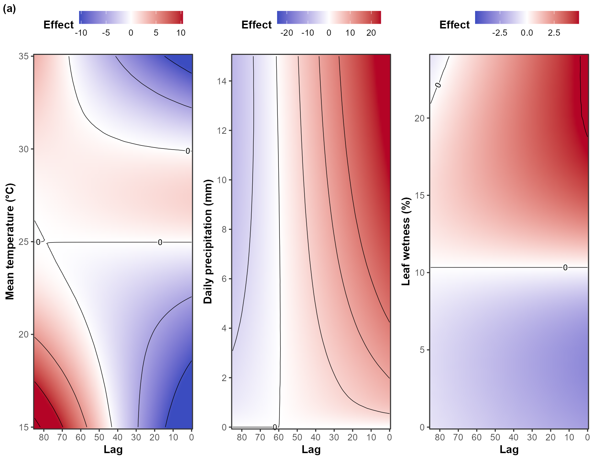
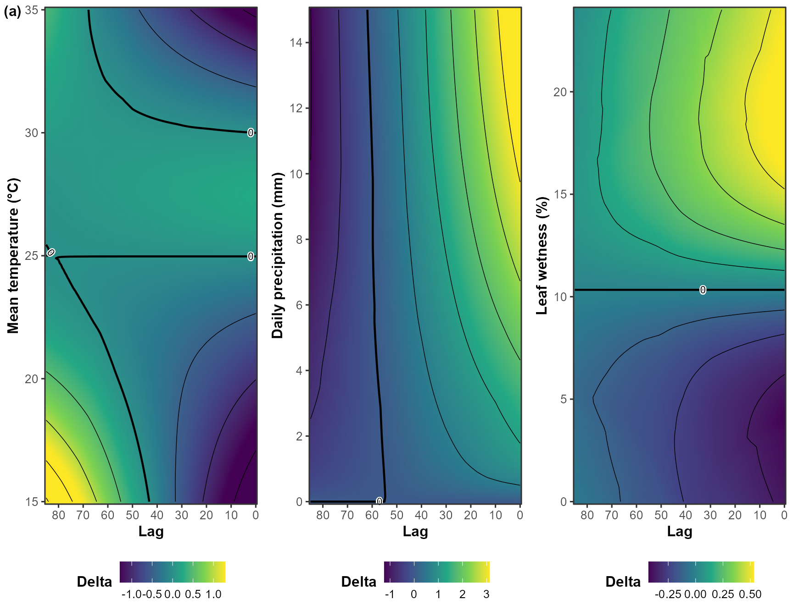
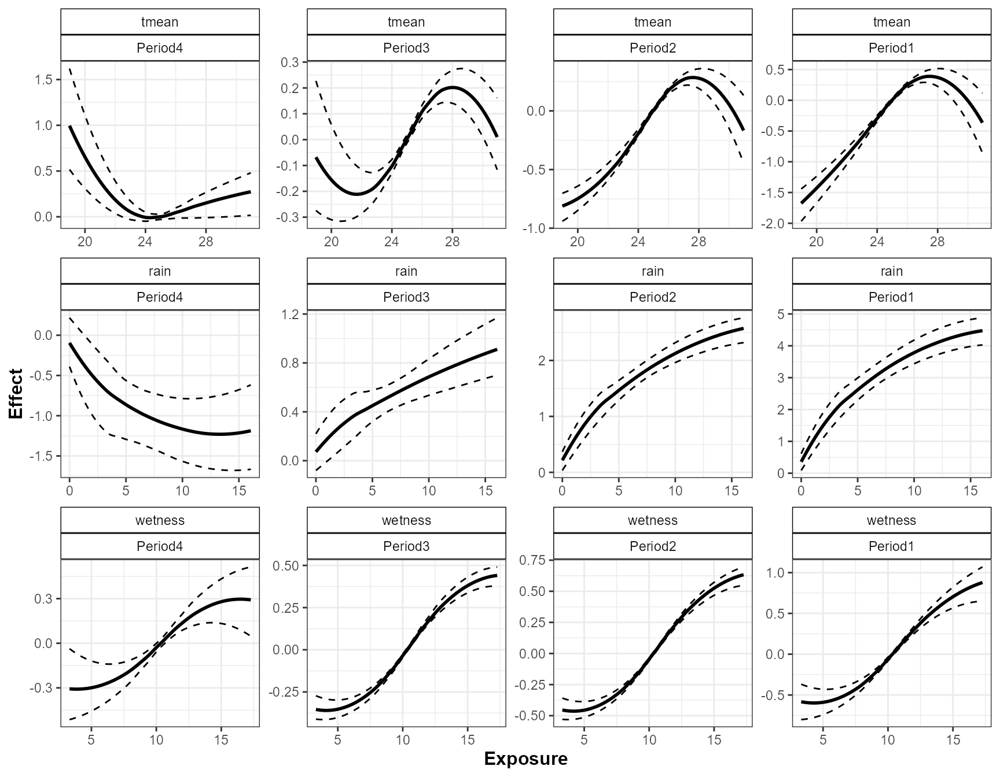
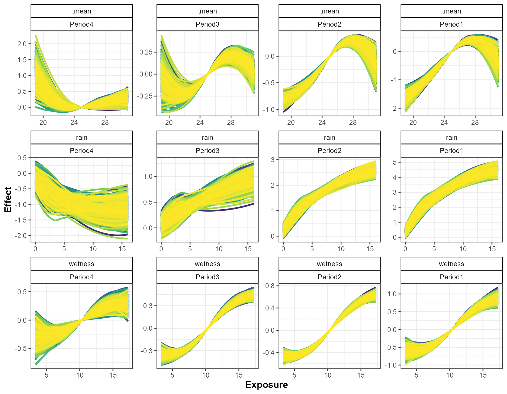
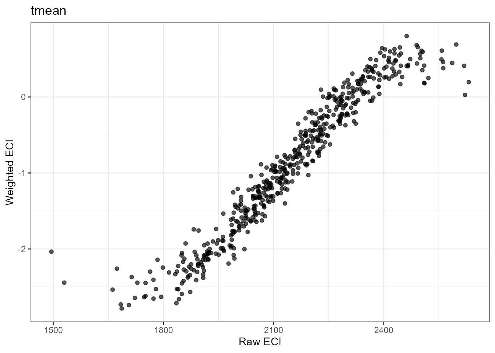
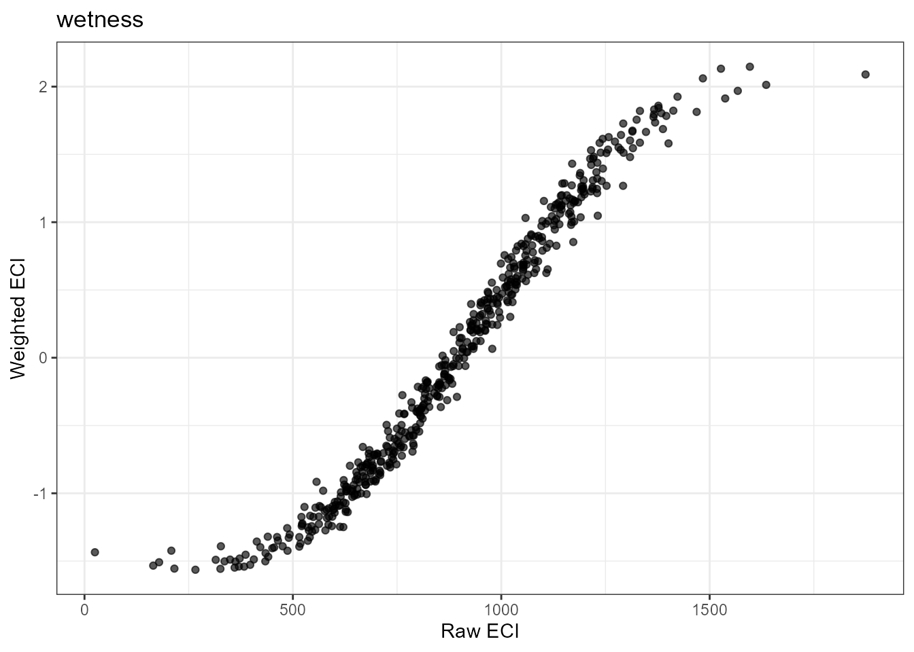
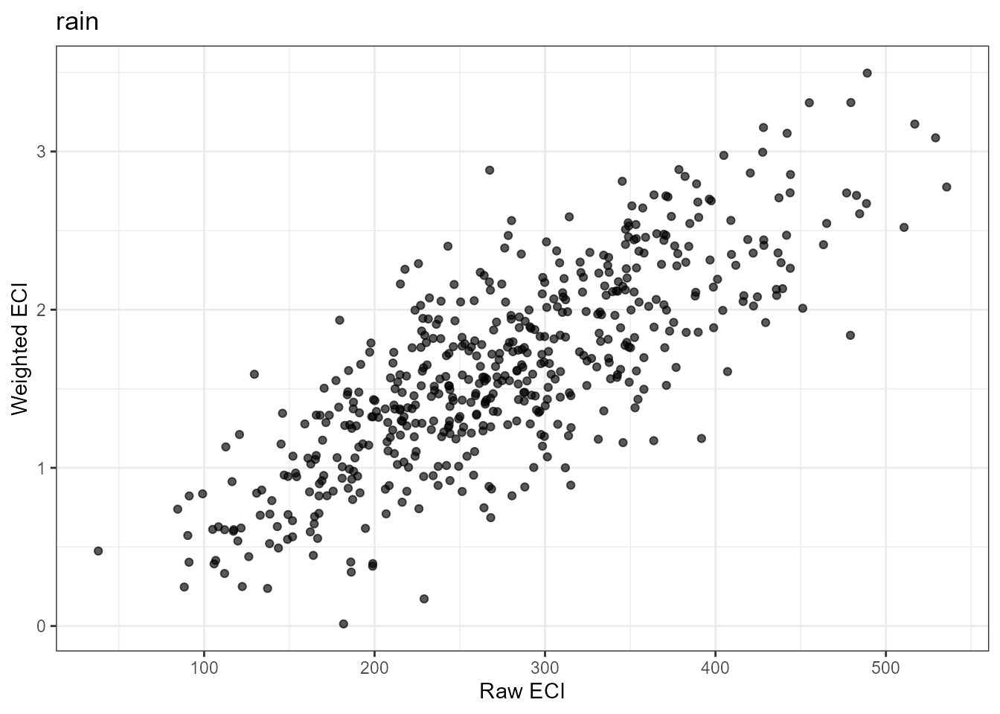
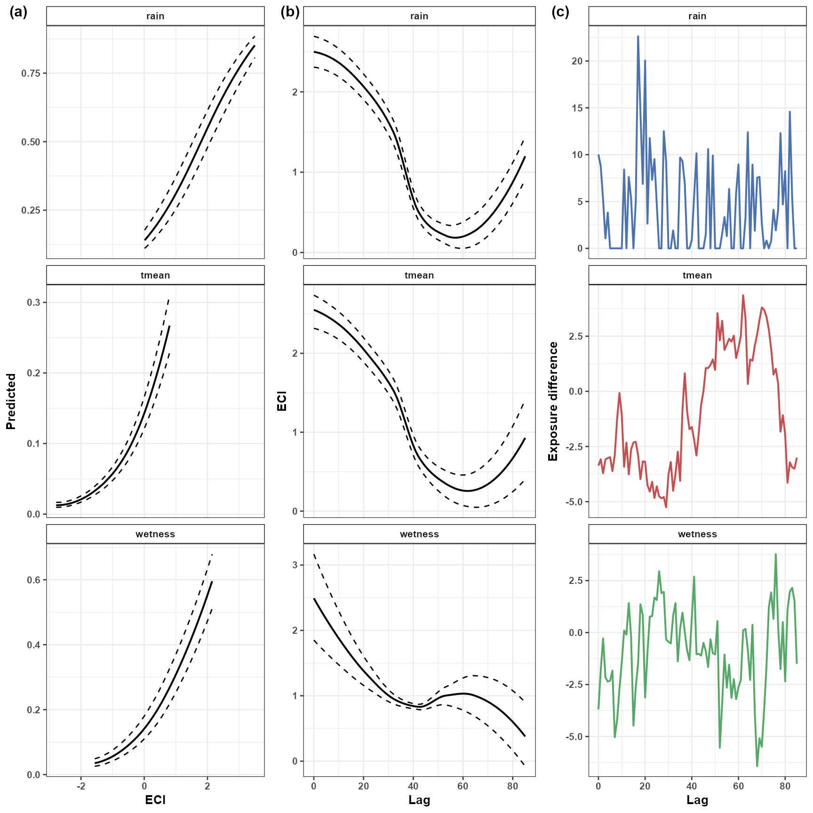

Understanding Effects
Ricardo G. Tomáz
Source:vignettes/understanding-effects.Rmd
understanding-effects.RmdIntroduction
The primary goal of EpiExposure is not only to fit
distributed lag nonlinear models, but also to translate estimated
exposure-lag-response surfaces into epidemiologically meaningful
quantities.
This section introduces four complementary approaches:
- lag-specific effects;
- period-specific effects;
- Exposure Cumulative Impact, or ECI;
- lag-specific decomposition of ECI.
These approaches help researchers investigate when associations are strongest, compare biologically meaningful lag periods, and summarize complete exposure histories.
What you will learn. This tutorial shows how to reconstruct and interpret lag-specific and period-specific effects from a fitted DLNM, calculate ECI for complete exposure histories, and identify the lags contributing most strongly to ECI.
Effect estimates should be interpreted as modeled associations under the fitted DLNM. They do not, by themselves, establish causal effects.
Preparing the example model
This section uses the same example dataset and basic model specification introduced in the Get Started section
data("epi_data")Define the exposure-lag structures:
cb <- define_exposures(
data = epi_data,
vars = c(
"tmean",
"rain",
"wetness"
),
max_lag = 85,
df_var = 3,
df_lag = 2
)Build the epidemic-level design:
dat <- build_design(
data = epi_data,
cb_templates = cb
)Prepare the response:
dat <- prepare_response(
data = dat,
response = "y",
family = "beta"
)Fit the model:
fit <- fit_epidlnm(
data = dat,
model_engine = "glmmTMB",
family = "beta",
random_effect = NULL,
epiexposure_spec = attr(
cb,
"spec"
)
)The individual cb_* coefficients are components of the
cross-basis expansion and should not be interpreted separately. The
functions below reconstruct those coefficients into quantities defined
over exposure values and retrospective lags.
Reference conditions and effect measures
Exposure-lag effects are interpreted relative to reference conditions. When an exposure value is evaluated at a particular lag, the other lags are held at their corresponding reference values.
Three effect measures are supported:
-
"linear"returns the DLNM contrast on the linear predictor scale (eta). -
"exponentiated"returnsexp(eta), corresponding to response ratios for log-link models and odds ratios for logit-link models. -
"percent"returns100 × (exp(eta) - 1), representing percent changes relative to the selected reference profile.
For links such as "identity", "probit",
"cloglog", or "inverse", only
"linear" is available.
In the examples below, we use:
effect_measure = "percent"expresses modeled contrasts as percentage effects relative to the selected reference profile.
The interpretation of effect direction depends on the response and contrast:
- positive values indicate a higher modeled response than the reference;
- negative values indicate a lower modeled response than the reference;
- values near zero indicate little modeled contrast from the reference.
These values describe contrasts in the expected response under the fitted model. They should not automatically be interpreted as causal risk changes.
Lag-specific effects
What are lag-specific effects?
Lag-specific effects describe how the modeled disease response changes across exposure values at an individual retrospective lag, while the remaining lags are held at their reference conditions.
A lag refers to the time elapsed between an exposure observation and the final disease assessment:
lag 0 → exposure measured at the disease assessment time
lag 1 → exposure measured one time unit before assessment
...
lag 85 → earliest exposure observation in the fitted historyLag-specific summaries help identify portions of the exposure history in which the fitted model shows stronger or weaker associations.
They do not imply that an individual cb_* coefficient
corresponds to a specific biological process. The lag-specific effect is
reconstructed from the joint cross-basis representation.
Estimating lag-specific effects
epi_l <- summarise_effects(
fit = fit,
data = epi_data,
scale = "lag",
effect_measure = "percent",
uncertainty = TRUE,
n_samples = 1000,
output = "summary",
at = list(
tmean = seq(
15,
35,
length.out = 100
),
rain = seq(
0,
15,
length.out = 100
),
wetness = seq(
0,
24,
length.out = 100
)
)
)The at argument defines the exposure values at which the
fitted exposure-lag-response relationships are evaluated.
The number of values in each sequence controls the resolution of the resulting effect grid. A denser grid produces smoother visualizations but increases computation and output size.
Inspect the reconstructed summaries:
| var | lag | scale | value | eta | eta_sd | eta_lower | eta_upper | effect | effect_sd | effect_lower | effect_upper | baseline | baseline_sd | baseline_lower | baseline_upper | predicted | predicted_sd | predicted_lower | predicted_upper | delta | delta_sd | delta_lower | delta_upper |
|---|---|---|---|---|---|---|---|---|---|---|---|---|---|---|---|---|---|---|---|---|---|---|---|
| tmean | 0 | lag | 15.000 | -0.156 | 0.022 | -0.200 | -0.113 | -14.472 | 1.918 | -18.088 | -10.695 | 0.141 | 0.018 | 0.109 | 0.18 | 0.123 | 0.016 | 0.095 | 0.159 | -0.018 | 0.003 | -0.025 | -0.012 |
| tmean | 0 | lag | 15.202 | -0.154 | 0.022 | -0.195 | -0.112 | -14.236 | 1.857 | -17.718 | -10.564 | 0.141 | 0.018 | 0.109 | 0.18 | 0.124 | 0.016 | 0.095 | 0.159 | -0.018 | 0.003 | -0.025 | -0.012 |
| tmean | 0 | lag | 15.404 | -0.151 | 0.021 | -0.191 | -0.110 | -13.991 | 1.795 | -17.347 | -10.452 | 0.141 | 0.018 | 0.109 | 0.18 | 0.124 | 0.016 | 0.095 | 0.159 | -0.017 | 0.003 | -0.024 | -0.011 |
| tmean | 0 | lag | 15.606 | -0.148 | 0.020 | -0.186 | -0.109 | -13.761 | 1.734 | -16.982 | -10.342 | 0.141 | 0.018 | 0.109 | 0.18 | 0.124 | 0.016 | 0.095 | 0.160 | -0.017 | 0.003 | -0.024 | -0.011 |
| tmean | 0 | lag | 15.808 | -0.145 | 0.019 | -0.182 | -0.108 | -13.526 | 1.673 | -16.641 | -10.234 | 0.141 | 0.018 | 0.109 | 0.18 | 0.125 | 0.016 | 0.096 | 0.160 | -0.017 | 0.003 | -0.024 | -0.011 |
| tmean | 0 | lag | 16.010 | -0.142 | 0.019 | -0.177 | -0.107 | -13.273 | 1.612 | -16.251 | -10.125 | 0.141 | 0.018 | 0.109 | 0.18 | 0.125 | 0.016 | 0.096 | 0.160 | -0.016 | 0.003 | -0.023 | -0.011 |
| tmean | 0 | lag | 16.212 | -0.139 | 0.018 | -0.173 | -0.106 | -13.017 | 1.551 | -15.877 | -10.015 | 0.141 | 0.018 | 0.109 | 0.18 | 0.125 | 0.016 | 0.096 | 0.160 | -0.016 | 0.003 | -0.023 | -0.011 |
| tmean | 0 | lag | 16.414 | -0.137 | 0.017 | -0.169 | -0.104 | -12.759 | 1.491 | -15.526 | -9.887 | 0.141 | 0.018 | 0.109 | 0.18 | 0.126 | 0.016 | 0.096 | 0.161 | -0.016 | 0.003 | -0.022 | -0.011 |
| tmean | 0 | lag | 16.616 | -0.134 | 0.016 | -0.164 | -0.103 | -12.511 | 1.431 | -15.145 | -9.763 | 0.141 | 0.018 | 0.109 | 0.18 | 0.126 | 0.016 | 0.097 | 0.161 | -0.015 | 0.003 | -0.022 | -0.011 |
| tmean | 0 | lag | 16.818 | -0.131 | 0.016 | -0.160 | -0.101 | -12.256 | 1.372 | -14.783 | -9.637 | 0.141 | 0.018 | 0.109 | 0.18 | 0.126 | 0.016 | 0.097 | 0.161 | -0.015 | 0.003 | -0.021 | -0.010 |
Visualizing lag-specific effects
plot_effects(
data = epi_l,
scale = "lag",
metric = "effect",
vars = c(
"tmean",
"rain",
"wetness"
)
)
Interpret these plots jointly across exposure values and lags. Avoid drawing conclusions from one isolated point, especially where uncertainty is large or data support is limited.
Local sensitivity and delta effects
In addition to effect estimates, EpiExposure can display
local sensitivity measures, denoted by (Delta).
Delta describes how rapidly the modeled effect changes as the exposure value increases locally:
- positive values indicate an increasing modeled response;
- negative values indicate a decreasing modeled response;
- values near zero indicate local stability or a relatively flat portion of the estimated relationship.
plot_effects(
data = epi_l,
scale = "lag",
metric = "delta",
delta_multiplier = 100,
vars = c(
"tmean",
"rain",
"wetness"
)
)
Delta should be interpreted as a local feature of the fitted exposure-lag-response surface. It is not a separate regression coefficient or an independent causal effect.
Period-specific effects
Why summarize lag periods?
Individual lags may be difficult to interpret biologically, particularly when disease development involves broader phases such as infection, colonization, symptom development, or secondary spread.
Period-specific effects combine information across predefined lag intervals. This allows the exposure-lag association to be summarized over biologically meaningful phases rather than interpreted one lag at a time.
The periods should be selected using biological knowledge whenever possible. They should not be chosen only because they produce larger or more visually distinct effects.
Defining epidemiological periods
periods <- define_periods(
max_lag = 85,
cuts = c(
20,
40,
60
),
prefix = "Period"
)
periods
#> period lag_start lag_end
#> 1 Period1 0 20
#> 2 Period2 21 40
#> 3 Period3 41 60
#> 4 Period4 61 85The selected cut points divide the fitted lag interval into four periods:
- Period1: lags 0–20 (most recent exposures)
- Period2: lags 21–40
- Period3: lags 41–60
- Period4: lags 61–85 (oldest exposures)
These periods are defined on the retrospective lag scale used by
DLNMs and EpiExposure rather than on the original
chronological time scale. Consequently, Period1 contains exposures
occurring closest to the disease assessment date, whereas Period4
contains exposures occurring furthest in the past. When assigning
biological labels, remember that lower lags represent more recent
exposure conditions and higher lags represent earlier exposure
conditions.
Estimating period-specific effects
epi_p_summary <- summarise_effects(
fit = fit,
data = epi_data,
scale = "period",
lag_periods = periods,
effect_measure = "percent",
uncertainty = TRUE,
n_samples = 1000,
output = "summary"
)When output = "summary" and
uncertainty = TRUE, EpiExposure summarizes the
simulated parameter draws for each exposure-period combination. The
reported effect corresponds to the median estimate across draws, while
the lower and upper bounds represent the empirical uncertainty interval
defined by interval_probs (95% by default).
This output is useful when the goal is to summarize the central tendency and uncertainty of the estimated effects rather than inspect each individual draw.
Inspect the summary:
| var | period | scale | value | eta | eta_sd | eta_lower | eta_upper | effect | effect_sd | effect_lower | effect_upper | baseline | baseline_sd | baseline_lower | baseline_upper | predicted | predicted_sd | predicted_lower | predicted_upper | delta | delta_sd | delta_lower | delta_upper |
|---|---|---|---|---|---|---|---|---|---|---|---|---|---|---|---|---|---|---|---|---|---|---|---|
| tmean | Period1 | period | 18.979 | -1.671 | 0.137 | -1.949 | -1.412 | -81.187 | 2.596 | -85.753 | -75.645 | 0.14 | 0.019 | 0.109 | 0.184 | 0.030 | 0.004 | 0.022 | 0.039 | -0.110 | 0.017 | -0.148 | -0.083 |
| tmean | Period1 | period | 19.241 | -1.613 | 0.127 | -1.877 | -1.370 | -80.066 | 2.549 | -84.692 | -74.588 | 0.14 | 0.019 | 0.109 | 0.184 | 0.031 | 0.004 | 0.024 | 0.041 | -0.109 | 0.016 | -0.146 | -0.081 |
| tmean | Period1 | period | 19.506 | -1.553 | 0.118 | -1.793 | -1.327 | -78.835 | 2.507 | -83.359 | -73.468 | 0.14 | 0.019 | 0.109 | 0.184 | 0.033 | 0.004 | 0.026 | 0.043 | -0.107 | 0.016 | -0.143 | -0.080 |
| tmean | Period1 | period | 19.752 | -1.494 | 0.110 | -1.716 | -1.281 | -77.547 | 2.475 | -82.027 | -72.236 | 0.14 | 0.019 | 0.109 | 0.184 | 0.035 | 0.004 | 0.028 | 0.045 | -0.105 | 0.016 | -0.141 | -0.078 |
| tmean | Period1 | period | 19.965 | -1.443 | 0.103 | -1.651 | -1.243 | -76.379 | 2.453 | -80.821 | -71.149 | 0.14 | 0.019 | 0.109 | 0.184 | 0.037 | 0.005 | 0.029 | 0.047 | -0.103 | 0.016 | -0.138 | -0.077 |
| tmean | Period1 | period | 20.171 | -1.392 | 0.098 | -1.592 | -1.203 | -75.154 | 2.439 | -79.646 | -69.985 | 0.14 | 0.019 | 0.109 | 0.184 | 0.039 | 0.005 | 0.031 | 0.049 | -0.101 | 0.016 | -0.136 | -0.075 |
| tmean | Period1 | period | 20.362 | -1.346 | 0.093 | -1.539 | -1.167 | -73.975 | 2.432 | -78.531 | -68.860 | 0.14 | 0.019 | 0.109 | 0.184 | 0.041 | 0.005 | 0.032 | 0.052 | -0.099 | 0.015 | -0.134 | -0.074 |
| tmean | Period1 | period | 20.547 | -1.298 | 0.089 | -1.480 | -1.131 | -72.699 | 2.433 | -77.236 | -67.739 | 0.14 | 0.019 | 0.109 | 0.184 | 0.043 | 0.005 | 0.034 | 0.054 | -0.098 | 0.015 | -0.131 | -0.072 |
| tmean | Period1 | period | 20.737 | -1.250 | 0.085 | -1.417 | -1.093 | -71.360 | 2.440 | -75.768 | -66.480 | 0.14 | 0.019 | 0.109 | 0.184 | 0.045 | 0.005 | 0.036 | 0.056 | -0.096 | 0.015 | -0.129 | -0.071 |
| tmean | Period1 | period | 20.902 | -1.208 | 0.082 | -1.367 | -1.055 | -70.130 | 2.453 | -74.518 | -65.197 | 0.14 | 0.019 | 0.109 | 0.184 | 0.047 | 0.005 | 0.037 | 0.058 | -0.094 | 0.015 | -0.127 | -0.069 |
The summary output contains one row for each exposure-period
combination and includes uncertainty summaries for the estimated
effects, baseline prediction, predicted response, and response-scale
difference (delta).
Visualizing period-specific effects:
plot_effects(
data = epi_p_summary,
scale = "period",
vars = c(
"tmean",
"rain",
"wetness"
),
period_order = c(
"Period4",
"Period3",
"Period2",
"Period1"
),
vars_order = c(
"tmean",
"rain",
"wetness"
),
period_response = "eta",
period_ylab = "Effect"
)
Period-specific summaries describe the modeled contribution accumulated over each defined lag interval. They should not be interpreted as four independently estimated models because all periods arise from the same fitted cross-basis surface.
Returning uncertainty samples
When output = "samples", the function returns the
individual draw-specific results instead of summary statistics. Each row
corresponds to one parameter draw and one exposure-period combination,
allowing custom uncertainty analyses and visualizations.
This output is particularly useful when calculating user-defined summaries, propagating uncertainty through downstream analyses, or building custom graphics.
In contrast to output = "summary", which reports median
estimates and uncertainty intervals across all simulated draws,
output = "samples" returns the complete draw-by-draw
results used to construct those summaries.
epi_p_samples <- summarise_effects(
fit = fit,
data = epi_data,
scale = "period",
lag_periods = periods,
effect_measure = "percent",
uncertainty = TRUE,
n_samples = 1000,
output = "samples"
)Visualizing period-specific effects:
plot_effects(
data = epi_p_samples,
scale = "period",
vars = c(
"tmean",
"rain",
"wetness"
),
period_order = c(
"Period4",
"Period3",
"Period2",
"Period1"
),
vars_order = c(
"tmean",
"rain",
"wetness"
),
period_response = "eta",
period_ylab = "Effect"
)
Inspect a subset of the sample-level output:
| sample | var | period | scale | value | eta | effect | baseline | predicted | delta |
|---|---|---|---|---|---|---|---|---|---|
| 1 | tmean | Period1 | period | 18.979 | -1.447 | -76.472 | 0.144 | 0.038 | -0.106 |
| 1 | tmean | Period1 | period | 19.241 | -1.410 | -75.578 | 0.144 | 0.039 | -0.104 |
| 1 | tmean | Period1 | period | 19.506 | -1.370 | -74.590 | 0.144 | 0.041 | -0.103 |
| 1 | tmean | Period1 | period | 19.752 | -1.331 | -73.589 | 0.144 | 0.042 | -0.101 |
| 1 | tmean | Period1 | period | 19.965 | -1.297 | -72.652 | 0.144 | 0.044 | -0.100 |
| 1 | tmean | Period1 | period | 20.171 | -1.262 | -71.680 | 0.144 | 0.045 | -0.098 |
| 1 | tmean | Period1 | period | 20.362 | -1.228 | -70.713 | 0.144 | 0.047 | -0.097 |
| 1 | tmean | Period1 | period | 20.547 | -1.194 | -69.707 | 0.144 | 0.048 | -0.095 |
| 1 | tmean | Period1 | period | 20.737 | -1.158 | -68.598 | 0.144 | 0.050 | -0.094 |
| 1 | tmean | Period1 | period | 20.902 | -1.126 | -67.569 | 0.144 | 0.052 | -0.092 |
The sample output preserves individual uncertainty realizations. It can support custom summaries, probability calculations, sensitivity analyses, and user-defined visualizations.
The rows belonging to the same draw should remain associated when comparing periods, exposures, scenarios, or contrasts.
Exposure Cumulative Impact
Why use ECI?
Disease responses depend on complete exposure histories rather than isolated observations.
Two epidemic histories may have similar average rainfall or temperature but different modeled epidemiological implications because favorable conditions occurred at different times.
Exposure Cumulative Impact, or ECI, summarizes a complete exposure history while retaining information from the fitted exposure-lag-response relationship.
ECI complements the lag-specific and period-specific summaries:
- lag-specific effects examine individual lags;
- period-specific effects combine predefined lag intervals;
- ECI summarizes the complete observed exposure history of each epidemic.
Calculating ECI
eci <- compute_eci(
data = epi_data,
group = "epi_id",
fit = fit,
vars = c(
"tmean",
"rain",
"wetness"
),
uncertainty = TRUE,
output = "summary",
n_samples = 1000
)Inspect the resulting summaries:
| epi_id | var | reference_value | max_lag | n_exposure_values | ECI_raw | ECI_raw_centered | baseline | baseline_sd | baseline_lower | baseline_upper | predicted | predicted_sd | predicted_lower | predicted_upper | ECI_weighted | ECI_weighted_sd | ECI_weighted_lower | ECI_weighted_upper | scale |
|---|---|---|---|---|---|---|---|---|---|---|---|---|---|---|---|---|---|---|---|
| 1 | tmean | 24.971 | 85 | 86 | 2060.099 | -87.432 | 0.141 | 0.019 | 0.11 | 0.18 | 0.049 | 0.004 | 0.040 | 0.058 | -1.173 | 0.124 | -1.410 | -0.929 | link |
| 1 | rain | 0.000 | 85 | 86 | 372.093 | 372.093 | 0.141 | 0.019 | 0.11 | 0.18 | 0.714 | 0.032 | 0.647 | 0.768 | 2.713 | 0.131 | 2.450 | 2.953 | link |
| 1 | wetness | 10.335 | 85 | 86 | 810.230 | -78.577 | 0.141 | 0.019 | 0.11 | 0.18 | 0.102 | 0.014 | 0.078 | 0.133 | -0.367 | 0.020 | -0.408 | -0.328 | link |
| 2 | tmean | 24.971 | 85 | 86 | 2037.798 | -109.734 | 0.141 | 0.019 | 0.11 | 0.18 | 0.031 | 0.003 | 0.026 | 0.037 | -1.637 | 0.155 | -1.932 | -1.323 | link |
| 2 | rain | 0.000 | 85 | 86 | 476.946 | 476.946 | 0.141 | 0.019 | 0.11 | 0.18 | 0.719 | 0.030 | 0.655 | 0.771 | 2.738 | 0.122 | 2.488 | 2.973 | link |
| 2 | wetness | 10.335 | 85 | 86 | 546.175 | -342.632 | 0.141 | 0.019 | 0.11 | 0.18 | 0.044 | 0.007 | 0.033 | 0.059 | -1.283 | 0.053 | -1.388 | -1.183 | link |
| 3 | tmean | 24.971 | 85 | 86 | 2093.533 | -53.998 | 0.141 | 0.019 | 0.11 | 0.18 | 0.050 | 0.004 | 0.041 | 0.059 | -1.151 | 0.110 | -1.367 | -0.939 | link |
| 3 | rain | 0.000 | 85 | 86 | 224.391 | 224.391 | 0.141 | 0.019 | 0.11 | 0.18 | 0.332 | 0.031 | 0.275 | 0.394 | 1.103 | 0.057 | 0.992 | 1.218 | link |
| 3 | wetness | 10.335 | 85 | 86 | 1052.515 | 163.708 | 0.141 | 0.019 | 0.11 | 0.18 | 0.240 | 0.027 | 0.195 | 0.295 | 0.654 | 0.032 | 0.592 | 0.718 | link |
| 4 | tmean | 24.971 | 85 | 86 | 2072.810 | -74.721 | 0.141 | 0.019 | 0.11 | 0.18 | 0.038 | 0.003 | 0.031 | 0.045 | -1.424 | 0.159 | -1.727 | -1.098 | link |
Interpreting ECI
ECI provides two complementary quantities:
-
ECI_rawdescribes the accumulated exposure history without weighting by the fitted exposure-lag association; -
ECI_weightedincorporates the weighting implied by the fitted exposure-lag-response relationship.
ECI_raw describes exposure accumulation. It does not
represent a modeled disease effect.
ECI_weighted describes how the complete exposure history
aligns with the association estimated by the DLNM. Larger or smaller
values should be interpreted relative to other histories fitted under
the same specification, exposure definition, reference conditions, and
scale.
ECI is a model-derived summary. It should not automatically be interpreted as a causal impact or as a directly observed biological quantity.
Comparing raw and weighted exposure histories
tmean
eci[
eci$var == "tmean",
,
drop = FALSE
] |>
ggplot(
aes(
x = ECI_raw,
y = ECI_weighted
)
) +
geom_point(
alpha = 0.65
) +
theme_bw() +
labs(
x = "Raw ECI",
y = "Weighted ECI",
title = "tmean")
wetness
eci[
eci$var == "wetness",
,
drop = FALSE
] |>
ggplot(
aes(
x = ECI_raw,
y = ECI_weighted
)
) +
geom_point(
alpha = 0.65
) +
theme_bw() +
labs(
x = "Raw ECI",
y = "Weighted ECI",
title = "wetness")
rain
eci[
eci$var == "rain",
,
drop = FALSE
] |>
ggplot(
aes(
x = ECI_raw,
y = ECI_weighted
)
) +
geom_point(
alpha = 0.65
) +
theme_bw() +
labs(
x = "Raw ECI",
y = "Weighted ECI",
title = "rain")
A strong relationship between the two quantities indicates that accumulated exposure and model-based weighting produce similar rankings for the displayed histories.
Deviations from that relationship may indicate that exposure timing changes the modeled importance of histories with similar raw accumulation.
Decomposing ECI by lag
Why decompose ECI?
Overall ECI provides one summary for the complete history, but researchers may also want to identify the lags that contribute most strongly to that summary.
compute_ecilag() decomposes ECI into lag-specific
contributions for a selected epidemic or grouping level.
This decomposition answers a different question from lag-specific effect curves:
- a lag-specific effect curve evaluates modeled contrasts across exposure values at a lag;
- ECI decomposition evaluates how the exposure values actually observed in a selected history contribute to that history’s ECI.
Computing lag contributions
eci_lag <- compute_ecilag(
data = epi_data,
group = "epi_id",
group_level = 1,
fit = fit,
var = c(
"tmean",
"rain",
"wetness"
),
uncertainty = TRUE,
output = "summary",
n_samples = 1000
)In this example:
group_level = 1selects the epidemic identified by level 1 of
epi_id.
For a real analysis, select the epidemic identifier that corresponds to the history of scientific interest.
Inspecting lag contributions
| epi_id | var | lag | exposure | reference_value | exposure_minus_reference | ECI_weighted | ECI_percent | ECI_absolute | ECI_weighted_sd | ECI_weighted_lower | ECI_weighted_upper | ECI_percent_sd | ECI_percent_lower | ECI_percent_upper | ECI_percent_n | ECI_absolute_sd | ECI_absolute_lower | ECI_absolute_upper |
|---|---|---|---|---|---|---|---|---|---|---|---|---|---|---|---|---|---|---|
| 1 | tmean | 0 | 21.605 | 24.971 | -3.367 | -0.058 | 3.188 | 0.058 | 0.004 | -0.067 | -0.049 | 0.131 | 2.905 | 3.422 | 1000 | 0.004 | 0.049 | 0.067 |
| 1 | tmean | 1 | 21.894 | 24.971 | -3.077 | -0.053 | 2.876 | 0.053 | 0.004 | -0.061 | -0.044 | 0.117 | 2.629 | 3.086 | 1000 | 0.004 | 0.044 | 0.061 |
| 1 | tmean | 2 | 21.258 | 24.971 | -3.713 | -0.062 | 3.380 | 0.062 | 0.005 | -0.071 | -0.053 | 0.140 | 3.084 | 3.624 | 1000 | 0.005 | 0.053 | 0.071 |
| 1 | tmean | 3 | 21.887 | 24.971 | -3.084 | -0.051 | 2.790 | 0.051 | 0.004 | -0.059 | -0.043 | 0.110 | 2.558 | 2.992 | 1000 | 0.004 | 0.043 | 0.059 |
| 1 | tmean | 4 | 21.948 | 24.971 | -3.023 | -0.049 | 2.692 | 0.049 | 0.004 | -0.057 | -0.042 | 0.105 | 2.469 | 2.882 | 1000 | 0.004 | 0.042 | 0.057 |
| 1 | tmean | 5 | 21.986 | 24.971 | -2.986 | -0.048 | 2.614 | 0.048 | 0.004 | -0.055 | -0.040 | 0.101 | 2.398 | 2.792 | 1000 | 0.004 | 0.040 | 0.055 |
| 1 | tmean | 6 | 21.356 | 24.971 | -3.616 | -0.056 | 3.071 | 0.056 | 0.004 | -0.064 | -0.048 | 0.116 | 2.819 | 3.270 | 1000 | 0.004 | 0.048 | 0.064 |
| 1 | tmean | 7 | 22.080 | 24.971 | -2.891 | -0.045 | 2.448 | 0.045 | 0.003 | -0.052 | -0.038 | 0.093 | 2.247 | 2.611 | 1000 | 0.003 | 0.038 | 0.052 |
| 1 | tmean | 8 | 23.713 | 24.971 | -1.258 | -0.019 | 1.060 | 0.019 | 0.002 | -0.023 | -0.016 | 0.061 | 0.918 | 1.168 | 1000 | 0.002 | 0.016 | 0.023 |
| 1 | tmean | 9 | 24.900 | 24.971 | -0.071 | -0.001 | 0.055 | 0.001 | 0.000 | -0.001 | -0.001 | 0.004 | 0.046 | 0.062 | 1000 | 0.000 | 0.001 | 0.001 |
Plotting the contribution profile
plot_eci(
eci_overall = eci,
eci_lag = eci_lag,
facet_scales = "free_y",
overall_nrow = 3,
lag_ncol = 1,
sample_smooth = TRUE,
linewidth = 0.7,
alpha = 0.20,
panel_labels = c(
"(a)",
"(b)",
"(c)"
),
overall_col = "ECI_weighted",
lag_col = "ECI_percent"
)
The overall panels summarize complete histories, whereas the lag panels show how the selected history is distributed across retrospective lags.
Large positive or negative lag contributions should be interpreted in the context of:
- the exposure values observed at those lags;
- the fitted exposure-response shape;
- the fitted lag-response shape;
- the selected reference conditions;
- uncertainty in the fitted coefficients.
How the summaries complement one another
Lag-specific effects, period-specific effects, ECI, and ECI decomposition are different views of the same fitted exposure-lag-response structure.
- Lag-specific effects describe modeled exposure contrasts at individual lags.
- Period-specific effects summarize modeled exposure contrasts across predefined lag intervals.
- ECI summarizes complete observed exposure histories.
- ECI lag decomposition identifies how individual lags contribute to ECI for a selected history.
These summaries should not be expected to answer the same question or produce identical rankings.
For example, a lag may show a strong modeled effect over part of the exposure range but contribute little to ECI for a particular epidemic if the observed exposure at that lag is close to its reference value.
Conversely, a moderate modeled effect can contribute substantially when an epidemic contains a pronounced exposure contrast at that lag.
Interpretation checklist
Before reporting an effect summary, verify:
- which response family and link were fitted;
- which exposure serves as the focus of interpretation;
- which reference profile or centering condition is being used;
- whether lag order is retrospective;
- how epidemiological periods were defined;
- whether the result is a summary or a sample-level output;
- whether uncertainty intervals are sufficiently precise;
- whether the evaluated exposure values are supported by the observed data;
- whether the interpretation is associational or supported by a separate causal design.
Avoid interpreting cross-basis coefficients
individually. Epidemiological interpretation should be based on
reconstructed lag-specific, period-specific, or cumulative summaries
rather than isolated cb_* estimates.
Next steps
The effect summaries presented in this section describe the direction, magnitude, and temporal distribution of modeled exposure associations. However, researchers may also want to identify the exposure regions in which the predicted response changes most rapidly.
The next section, Sensitivity Analysis and Decision Support, introduces:
- local response sensitivity;
- elasticity;
- model-derived critical regions;
- comparisons among environmental gradients;
- interpretation of sensitivity results for monitoring and decision support.
These tools extend effect interpretation by examining the rate of change along model-based prediction curves.
The subsequent Simulation and Prediction section provides a broader introduction to constructing complete hypothetical exposure histories, predicting expected disease outcomes, and comparing environmental scenarios.